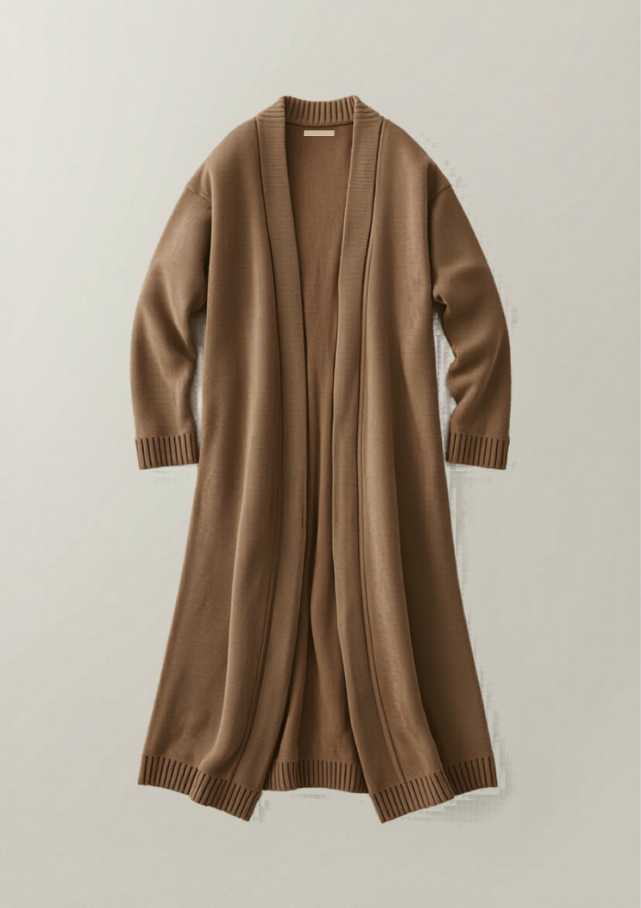

和
東和盛泰株式会社TOUWASEITAI CO., LTD.
PRODUCTION TECH PACK
工場用 製品仕様書
FACTORY / 製造用・全3葉 1/3
01
製品概要・基準写真
PRODUCT & REFERENCE PHOTO

▲ 基準現品写真（色：モカ）。本写真と360°図・寸法を相違なきこと。
| カテゴリ | ロングガウン（前開き・釦なし・通しリブ見返し） |
|---|
| 対象 | レディース 30〜40代前半 |
|---|
| シルエット | ドロップ肩・マキシ丈（膝下〜ふくらはぎ）。羽織るだけで様になる縦長効果。とろみのドレープ。 |
|---|
| 編地 | 身頃・袖＝天竺〜ミラノリブ（無地・とろみ）／衿ぐり〜前端＝通しリブ見返し／裾・袖口＝リブ。全成形。 |
|---|
| きかせ所 | 長尺をたわませず度目を安定させ、とろみのドレープを出す設計。長いニットは伸び・型崩れとの戦いで工場差が出る。 |
|---|
| 想定上代 | ¥4,500〜4,900（参考。確定はカウンターサンプル承認後） |
|---|
02
360°展開図（前・後・側）
360° TECHNICAL FLATS ・ FRONT / BACK / SIDE
※ ドロップ肩・セットイン袖（前振りなし）。破線＝脇接ぎ位置。前開き釦なし。衿ぐり〜前端〜（任意で裾）に通しリブ見返し（幅4cm）。長尺は度目安定でドレープ確保。
03
パーツ展開図（編立パネル）
PANEL DEVELOPMENT ・ KNIT PARTS
※ 全パーツ横編全成形。接ぎ＝肩:リンキング／脇・袖下:オーバーロック＋本縫い／前端見返し:1×1リブ連続編みリンキング付け・伸び止め（長尺の伸び対策）。
和
東和盛泰株式会社TOUWASEITAI CO., LTD.
MEASUREMENT SPEC
寸法・POM
FACTORY / 製造用・全3葉 2/3
04
採寸ポイント図（POM）
POINTS OF MEASURE ・ 平置き
| 記号 | 採寸箇所 | 採寸方法 |
|---|
| A | 着丈 | HPS→裾端 |
| B | 身幅 | 脇下2.5cm下を直線 |
| C | 肩幅（ドロップ） | 肩先→肩先 |
| D | 袖丈 | 肩先→袖口端 |
| E | 袖幅 | アームホール下を直線 |
| F | 袖口幅 | 袖口リブ端 |
| G | アームホール | 肩先→脇下 直線 |
| H | 後衿ぐり幅 | 見返し内寸 |
| K | 見返し幅 | 前端リブ band 幅 |
| L | 見返し長 | 後衿中央→裾端（片側） |
| M | 裾リブ高 | 裾端→リブ切替 |
| N | 袖口リブ高 | 袖口端→リブ切替 |
| O | 裾幅（片側・開） | 前端→脇 直線 |
05
寸法表・グレーディング
SIZE SPEC & GRADING ・ 単位 cm
| 記号 | 採寸箇所 | S | M | L | XL | XXL | 許容差± |
|---|
| A | 着丈 | 95 | 98 | 101 | 104 | 107 | 2.0 |
|---|
| B | 身幅 | 52 | 55 | 58 | 61 | 64 | 2.0 |
|---|
| C | 肩幅（ドロップ） | 44 | 46 | 48 | 50 | 52 | 1.0 |
|---|
| D | 袖丈 | 54 | 55 | 56 | 57 | 58 | 1.5 |
|---|
| E | 袖幅 | 19 | 20 | 21 | 22 | 23 | 1.0 |
|---|
| F | 袖口幅 | 9.0 | 9.5 | 10.0 | 10.5 | 11.0 | 0.5 |
|---|
| G | アームホール | 22 | 23 | 24 | 25 | 26 | 1.0 |
|---|
| H | 後衿ぐり幅 | 18.5 | 19.0 | 19.5 | 20.0 | 20.5 | 0.7 |
|---|
| K | 見返し幅 | 4.0 | 4.0 | 4.0 | 4.0 | 4.0 | 0.3 |
|---|
| L | 見返し長（片側） | 105 | 108 | 111 | 114 | 117 | 2.0 |
|---|
| M | 裾リブ高 | 4.0 | 4.0 | 4.0 | 4.0 | 4.0 | 0.5 |
|---|
| N | 袖口リブ高 | 4.0 | 4.0 | 4.0 | 4.0 | 4.0 | 0.5 |
|---|
| O | 裾幅（片側・開） | 56 | 59 | 62 | 65 | 68 | 2.0 |
|---|
※ 平置き・自然状態。長尺のため吊り伸びを考慮し度目で着丈を安定。グレーディングは身幅+3 / 肩+2 / 着丈+3 を基本ピッチ。基準＝M。
06
編密度・度目指示
KNITTING DENSITY
| ゲージ | 12GG 横編（全成形） | 基準度目 | 10cm角の目数・段数はカウンターサンプル時に実測・記録し量産固定 |
|---|
| 長尺対策 | 天竺〜ミラノリブで度目を締め、吊り伸び・型崩れを防止 | 見返し | 1×1リブ・身頃より度目詰め（前端の伸び・波打ち防止） |
|---|
07
カラー展開・色番
COLORWAY
| No. | カラー名 | 色番 | PANTONE TPX | 備考 |
|---|
| 1 | モカ | MOC | 17-1018 | 定番（現品基準） |
| 2 | グレージュ | GBG | 16-1305 | 大人世代の定番 |
| 3 | ブラック | BLK | 19-4006 | 通年・着回し |
| 4 | テラコッタ | TRC | 18-1248 | 展示映え・差し色 |
※ 確定はラボディップ（編地色見本）承認による。無地・とろみのため度目ムラ・段差が目立ちやすく均一編成を厳守。
和
東和盛泰株式会社TOUWASEITAI CO., LTD.
CONSTRUCTION & QC
素材・縫製・検品
FACTORY / 製造用・全3葉 3/3
08
素材・付属（BOM）
BILL OF MATERIALS
| 本体糸 | アクリル混（とろみ・抗ピリング）。混率はサンプル時確定 | 番手/本数 | 12GG適合。とろみを出す番手・本数はサンプル時確定 |
|---|
| 縫製糸 | ウーリーナイロン／スパン#60／本体色合わせ | 付属 | 釦なし・前開き（ベルト/共布タイは任意・指示による） |
|---|
| 織ネーム | 後ろ衿中央・縦型 | 品質表示 | 左脇縫い代・裾上15cm／組成・原産国・洗濯絵表示 |
|---|
| 下げ札 | 主札＋品番札（右袖・ガンタッカ） | 個包装 | OPP袋＋台紙（長尺は折りジワ防止に三つ折り） |
|---|
09
ディテール拡大・縫製指示
DETAIL CALLOUTS
衿/見返し
衿ぐり〜前端の通し1×1リブ見返し・幅4cm。台衿なし・伸び止め必須。
前端通し
前端は衿から裾まで途切れなく通し編み。釦・ホールなし。左右対称・波打ち不可。
袖口
1×1リブ袖口・リブ高4cm。袖下＝オーバーロック＋本縫い。
裾
1×1リブ裾・リブ高4cm。前端見返しと裾リブの角は連続処理。
10
縫製・接ぎ仕様
CONSTRUCTION
| 肩接ぎ | リンキング（目移し接ぎ） | 脇・袖下 | 4本針オーバーロック＋本縫い（長尺の伸び対応） |
|---|
| 袖付け | セットイン縫製（イセ少・左右対称） | 前端見返し | 1×1リブ連続編みリンキング付け・伸び止めテープ併用可 |
|---|
| 裾 | リブ編込み・前端と連続処理 | 仕上げ | 吊り伸び抑制の整形セット。とろみのドレープを残す（過圧縮不可） |
|---|
11
洗濯表示・梱包
CARE & PACKING
| 洗濯表示 | 手洗い（弱）／漂白不可／タンブラー乾燥不可／アイロン中温（あて布）／日陰の平干し ※長尺は吊り干し不可・平干し厳守（伸び防止） |
|---|
| たたみ | 三つ折り＋袖たたみ（台紙入り） | 個包装 | OPP個包装・折りジワ最小化 |
|---|
12
検品基準・合否
QUALITY CONTROL
- 寸法：全POMを許容差内。基準M。着丈の吊り伸び・左右の前端長差なきこと。
- 編立：無地の度目ムラ・編段（横段）・前端の波打ち・ねじれは不良。
- 抗ピリング：JIS L 1076（ICI法）3-4級以上を目標。
- 洗濯収縮：タテ・ヨコ ±3%以内。長尺の伸びを実着・吊り試験で確認。
- 染色堅牢度：摩擦・洗濯とも4級以上を目標（濃色は別途確認）。
- 付属・表示：織ネーム/品質表示の位置・内容を現品照合。検針通過。
- ※本仕様書は提案兼製造指示。寸法・度目・原価は参考値を含み、量産確定はカウンターサンプル承認後とする。